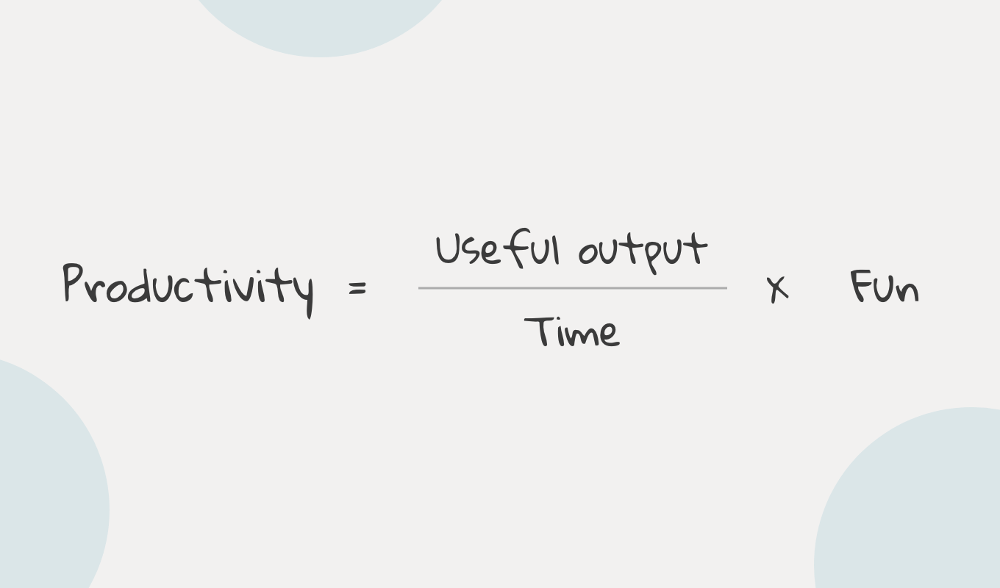

Let's define productivity. Productivity is how much work we can get done in the smallest amount of time possible. But is not just about getting more things done. It is also about getting important things done consistently. Because if we are working on the wrong things, there's no point of being productive. Like there is no point of trying to spin the treadmill and doing lots of exercise if your objective is to reach somewhere.
Alongwith that, if we are not enjoying the stuff we are doing, it's very hard to get things done. Because when we do the stuff we enjoy, it no longer feels like work. It means that we don't have to worry about motivation, consistency, willpower, discipline, or other stuff. Because it's fun. So it is the most important element of being productive. if we can make out tasks enjoyable, it just super charges absolutely everything.
So here's the productivity equation coined by Ali Abdaal. It's getting important things done, getting them done in less time, and also having fun along the way.
So here are some simple ways to be more productive.
Most of why we are not productive, and feel overwhelmed, is because we are using our brains as a to-do list. As David Allen says,
Our brain is for having Ideas, not for storing them.
So when you find yourself trying to remember something you need to get done, write it down somewhere. When I'm Like "Ohh, Yeah. I should go to the grocery store" the moment I get that instinct, I write it down in my to-do list. It makes me feel less stressed.
Often procrastination or lack of productivity comes from not having a clearly defined next step. When it comes to writing our to-do-list, we are notoriously bad at actually clarifying what each stuff mean. For example, If I have to redesign my website, mentioning "website redesign" is not enough. It would make no sense to my future self. Instead, I need to break the task into sub-tasks like, Read case studies, find the right colour palette, wireframe and sketch. The more specific you're about your task the more easy it is to get things done.
If you only do one thing each day, then spend a few minutes each night organizing your to–do list for tomorrow. When I do it right, I’ll outline the article I’m going to write the next day and develop a short list of the most important items for me to accomplish. It takes 10 minutes that night and saves 3 hours the next day.
Or at the very least, put it somewhere that is out of sight. This eliminates the urge to check text messages, Facebook, Twitter and so on. This simple strategy eliminates the likelihood of slipping into half–work where you waste time dividing your attention among meaningless tasks.
This is one of the best things I learnt from Elon Musk. Our mental energy is drained more through the sense of switching task than the task itself. There's just something about switching focus from one thing to the next, to the next, that wears us out, Makes us feel a sense of mental fatigue that, a deep focus on one thing, doesn't cause.
Instead, Batch similar tasks. For example, when I need to write an article I blockout two full days. It's all I do for those two days, and then I move on. I spend next 2 weeks not thinking about it. It's by batching your projects into short term burst of focus and attention, that you're able to leverage your energy the best.
This is something Ali Abdaal talks about a lot. Basically the Idea is, When following a diet, often people will schedule a cheat day where they can eat whatever they want. This makes it easier to follow the diet on every other day. The Write-off Principle works in the same way. No matter how productive we are, there are somedays when we are tired and don't feel like work. Instead of feeling guilty, you can actively decide that the day is going to be a write-off. This gives you the mental space to enjoy yourself and take a break. This also allows you to come back with a more clear and focused mind.
Let me know what you think on twitter.